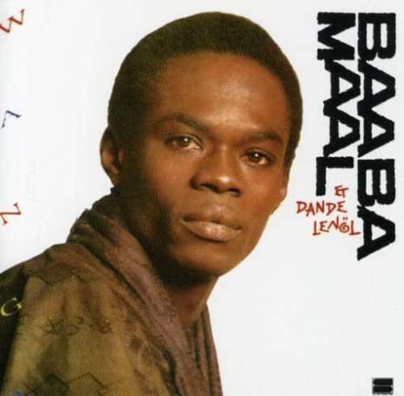

CD
Wango
Baaba Maal
Media: NM · Sleeve: VG+
CA$20.00
Discogs SuggestedCA$29.85
Discogs MedianCA$29.85
Discogs HighCA$29.85
- Year
- 1987
- Label
- Syllart Production
- Catalog #
- SYLCD 8348
- Country
- Europe
- Genre / Style
- Folk, World, & Country · African